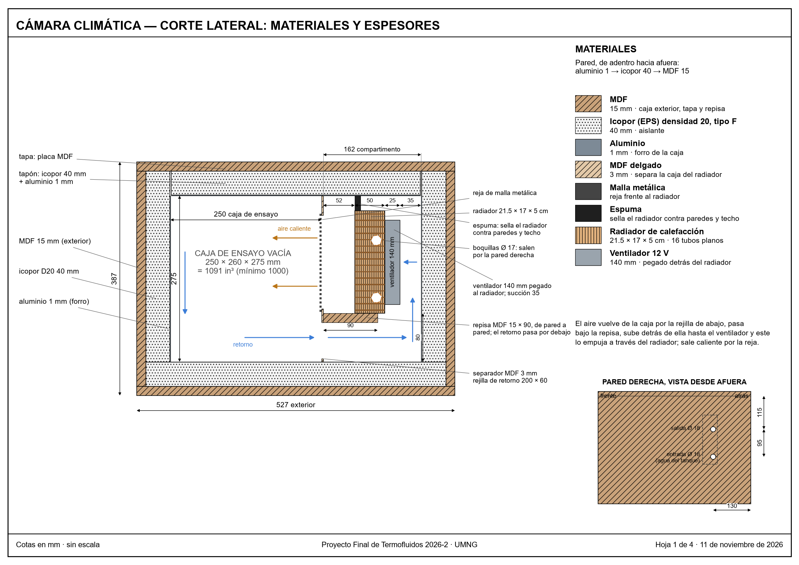
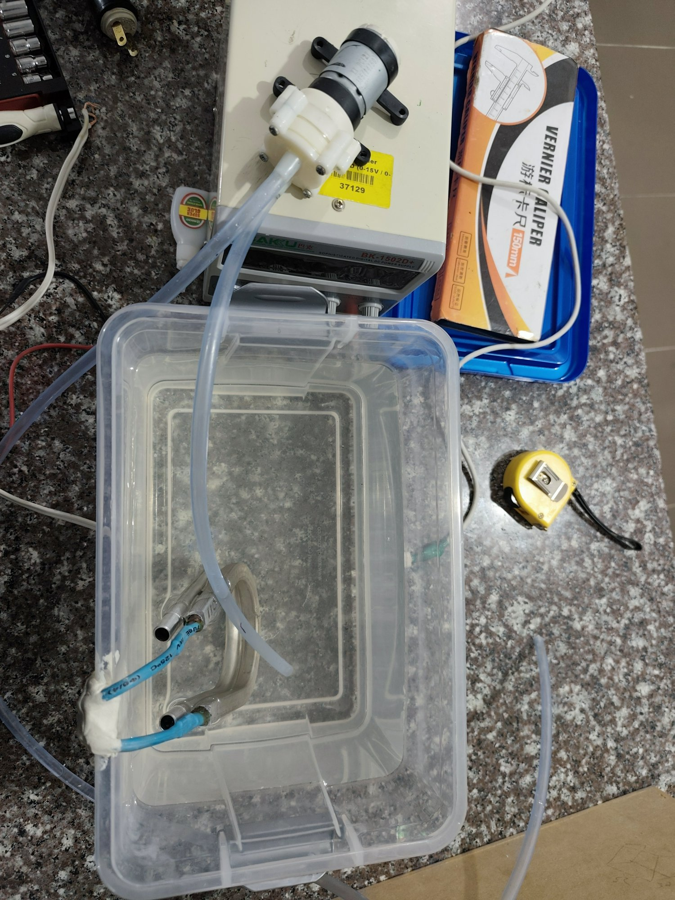
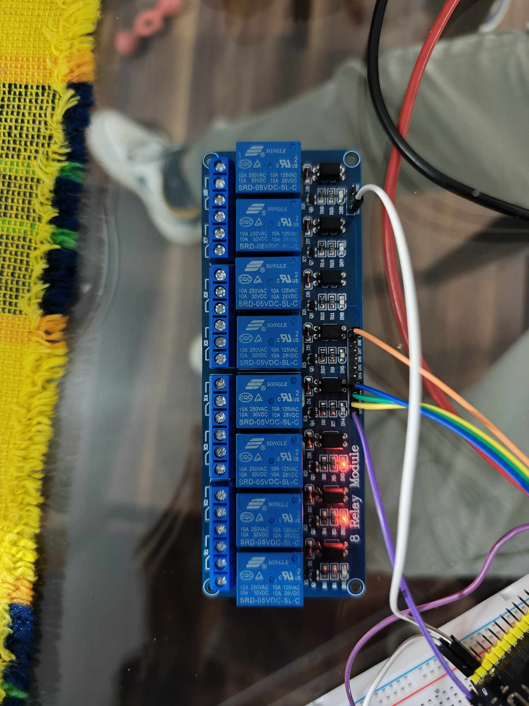
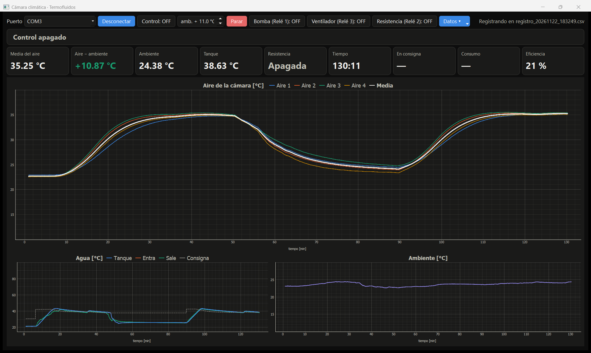
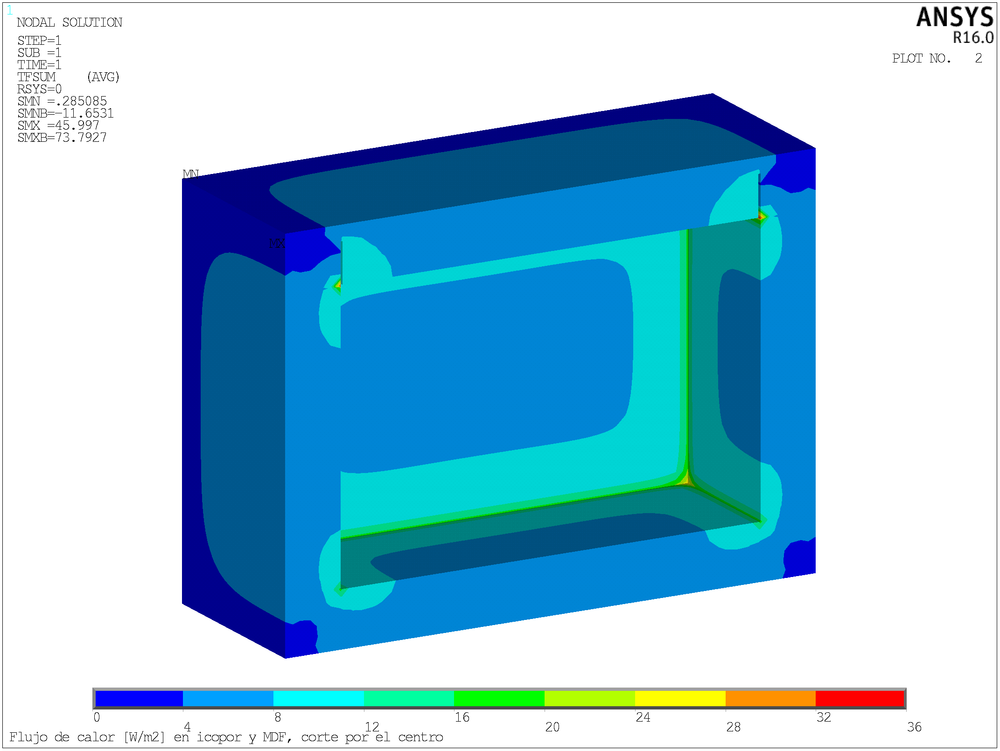
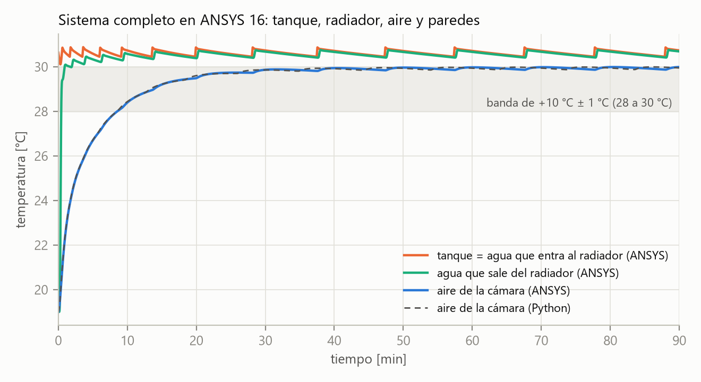

1 Resumen Ejecutivo y Cumplimiento del Reto
Se diseñó, construyó, instrumentó y validó computacional y experimentalmente una cámara climática de calentamiento indirecto agua–aire que aprovecha energía térmica de agua caliente a través de un radiador automotriz de cobre de dos pasadas, manteniendo la zona de ensayo completamente despejada y uniforme.


2 Diseño Mecánico y Análisis Termodinámico (en Cajicá: 74.14 kPa)
Geometría, Capas de la Pared y Hermeticidad (D1, M1, M2)
- Criterio geométrico: Aunque la esfera reduce el área 19.4 %, se eligió un prisma rectangular casi cúbico para fabricar juntas planas sin fugas con lámina y tablero comercial.
- Volumen dividido en dos zonas:
- Caja de ensayo útil: 265 × 260 × 275 mm = 0.018948 m³ (1156 in³), superando el mínimo obligatorio de 1000 in³.
- Compartimento del radiador: 150 × 260 × 275 mm (separado por reja metálica perforada en L que protege al usuario y deja circular el aire).
- Pared compuesta (adentro → afuera): Lámina de aluminio de 0.95 mm (distribuye el calor y protege el EPS) + Poliestireno expandido (EPS) de 40 mm (k = 0.038 W/m·K) + Cascarón estructural de MDF de 15 mm (k = 0.13 W/m·K).
- Efecto altitud de Cajicá (2558 m, 74.14 kPa): La densidad del aire seco a 30 °C baja a 0.852 kg/m³ (27 % menor que a nivel del mar) y el agua hierve a 91.5 °C.
Balances de Masa y Energía, UA y Masa Térmica (D1)
ṁw,ent = ṁw,sal = ρw·V̇w = 0.0288 kg/s (a 1.76 L/min)
maire = ρaire·Vint = 0.852 × 0.0297 = 0.0253 kg (ṁaire = 5.44×10⁻³ kg/s)
Rtotal = Ri (0.114) + Ral (0.00001) + Reps (1.569) + Rmdf (0.138) + Ro (0.141) = 1.928 K/W
UA = 1 / Rtotal = 0.519 W/K (el EPS aporta el 81.4 % del aislamiento)
Cef = ∑(m·c·f) = 6911 J/K (Aluminio 19.5 %, Radiador+agua 33.0 %, MDF 28.1 %, Aire 0.4 %)
Cef·(dT/dt) = Q̇hx − UA·(T − T∞) · τ = Cef/UA = 222 min
Para +11 K en 20 min: Q̇req = 66.2 W · Mantenimiento: Q̇mant = 5.70 W


3 Diseño del Intercambiador (ε–NTU) y Circuito Hidráulico (D2, M3, M4)
Radiador de cobre 2 pasadas + Ventilador 92 mm + Bomba R385Radiador de Cobre (D2)
Núcleo automotriz de calefacción (Toyota) de 215 × 170 × 50 mm:
- 29 tubos planos de latón/cobre en 2 pasadas (15 ida + 14 retorno).
- Área de aletas: Aaleta = 1.421 m² (persianas louvered, paso 1.5 mm, ηf = 0.938, ηo = 0.946).
- Área exterior de tubos: Atubo = 0.214 m² (Área total lado aire = 1.635 m²).
- Lado agua: Nuw = 8.235 (flujo laminar en ducto plano), hw = 1621 W/(m²·K).
Punto de Operación ε–NTU (D2, M3)
Con el ventilador axial de 92 × 92 × 25 mm instalado (12 V, 0.14 A) a la densidad de Cajicá:
Caire = Cmin = 5.23 W/K
Cagua = Cmax = 109.7 W/K (a 1.6 L/min)
UAhx = 11.4 W/K → NTU = 2.18
ε = 0.870 → K = ε·Cmin = 4.54 W/K
En las pruebas reales se identificó Kexp ≈ 4.65 W/K (diferencia < 2.5 %).
Tanque, Resistencia y Bomba (M4)
- Tanque: Recipiente de polipropileno Plásticos Kendy (6.5 L, Tmáx = 121 °C) con 4.4 L de agua (Ct = 18.3 kJ/K).
- Por qué con tapa: Sin tapa la evaporación pierde 59.7 a 168.7 W; con tapa se evita humidificar el laboratorio y se protege la electrónica.
- Resistencia: Tubular sumergida en U de 1000 W nominales a 120 V (833 W medidos: 118.4 V × 7.04 A).
- Bomba: Diafragma R385 (12 V DC, 0.30 A) con mangueras de PVC de 8 mm; caudal medido por aforo: 1.76 L/min (ΔPcircuito = 4.71 kPa).


4 Electrónica, Acondicionamiento y Control en Cascada (E1–E4, C1–C3)
ESP32-S3 + 7× DS18B20 + Filtro de Kalman + Cascada PIPor qué Control en Cascada PI + On/Off (C1, C2)
El tanque con 4.4 L de agua y el radiador con el ventilador de 92 mm tienen constantes de tiempo del mismo orden (~14 min). Si se conmutara la resistencia de 833 W mirando solo el aire, el calor acumulado en el agua seguiría subiendo la cámara varios grados después de apagar.
ea = Tset,a − Taire (con Tset,a = Tamb + 11.0 K)
T*w = Tamb + 2.0·(Tset,a − Tamb) + 0.6·ea + 0.0025·∫ea dt
Saturación: Tset,w ∈ [Tset,a, min(Tamb + 30 K, 58 °C)]
• Si Tent < Tset,w − 0.2 K → Resistencia ON
• Si Tent > Tset,w + 0.2 K → Resistencia OFF
• Si ea < −0.3 K → Apagado directo y congelación del integrador (anti-windup)
Sensores 1-Wire, Acondicionamiento y Potencia (E1–E4)
- 7 sondas digitales DS18B20 (E1): Bus único 1-Wire en
GPIO 4con pull-up de 5 kΩ a 3.3 V (resolución 12 bits = 0.0625 °C, tiempo de conversión asíncrono 750 ms). 4 en el aire interior, 1 en ambiente, 1 en agua de entrada (tanque) y 1 en agua de salida. - Filtro de 3 etapas + Calibración (E2):
- Verificación CRC de 8 bits y descarte de −127 °C y 85 °C.
- Rechazo de picos (> 3 K en aire o > 8 K en agua en 1 s).
- Filtro de Kalman escalar (Q = 0.002 K², R = 0.03 K²) + corrección de desfases en frío.
- Conmutación y Potencia (E3, E4): ESP32-S3-N16R8 gobierna módulo optoacoplado de relés SRD-05VDC-SL-C (lógica invertida:
GPIO 5Bomba,GPIO 6Resistencia,GPIO 7Ventilador). Línea AC de 120 V aislada de la fuente DC BAKU de 12 V (consumo total DC: 5.3 W).
Diagrama de Bloques del Control en Cascada Implementado en el Firmware



5 Modelos Matemáticos y Simulación Computacional (D3)
6 Modelos · Independencia de Malla · Python vs. ANSYS 16Se implementaron seis modelos complementarios que cubren los cuatro requisitos mínimos de simulación: (1) sensibilidad de malla y paso de tiempo, (2) flujo de calor estacionario cámara → ambiente, (3) calentamiento transitorio de las paredes, y (4) comportamiento acoplado del intercambiador y del circuito hidráulico.







Por qué coinciden tan bien ambos modelos
En el modelo teórico concentrado (3 EDO) el acoplamiento agua–aire se calcula con la fórmula analítica K = ε·Cmin = 4.54 W/K, mientras que el modelo simulado distribuido divide los tubos del radiador en 20 celdas axiales y el EPS en 12 capas con masa térmica.
Como el caudal de agua es alto (Cmin/Cmax = 0.044), la caída de temperatura del agua en el radiador es menor a 0.3 K y la fórmula analítica ε–NTU reproduce exactamente la integración celda por celda.